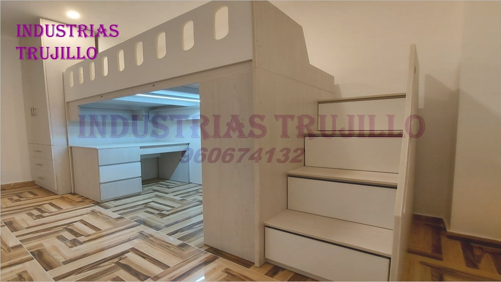
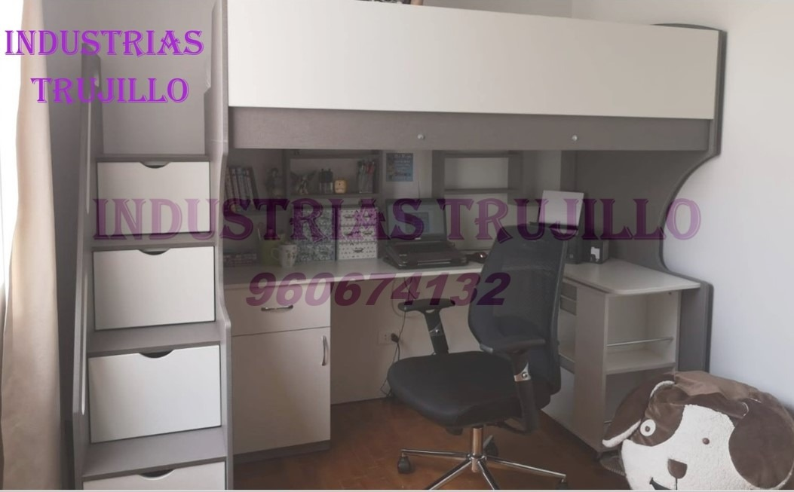

El presente proyecto consiste en la implementacion de una tienda online para la Muebleria Trujillo. Dicha implementacion permitira que la empresa logre una mejoría en ventas y un su crecimiento del mercado de inmuebles, ya que facilitara a que los clientes puedan comprar desde su hogar sin tener que salir.
 